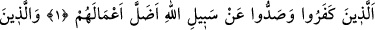
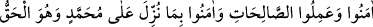
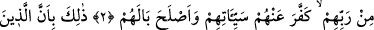
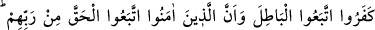
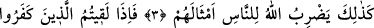
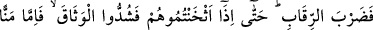
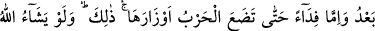
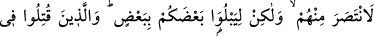
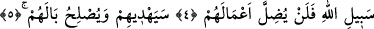
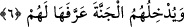

MÜ’MİN,
RABBINDAN GELEN
HAKK’A UYAR
Bismillâhirrahmânirrahîm
1. İnkâr edenlerin ve Allah yolundan alıkoyanların işlerini Allah boşa çıkarmıştır.
2. İman edip yararlı işler yapanların, Rableri tarafından hak olarak Muhammed’e
indirilene inananların günahlarını Allah örtmüş ve hallerini düzeltmiştir.
3. Bu, böyledir: Çünkü inkâr edenler bâtıla uymuşlar; inananlar ise Rablerinden
gelen hakka uymuşlardır. İşte Allah, onların durumlarını, insanlara böyle anlatır.
4. (Savaşta) İnkâr edenlerle karşılaştığınız zaman boyunlarını vurun. Nihâyet
onları iyice vurup sindirince bağı sıkıca bağlayın (onları esîr alın). Ondan sonra
artık ya lütfen bırakır veya karşılığında fidye alırsınız. Harb, ağırlıklarını
bırakıncaya (savaş sona erinceye) kadar (böyle yaparsınız). Allah dileseydi (kendisi)
onlardan öç alırdı, fakat sizi birbirinizle denemek için (size savaşı emrediyor).
Allah, kendi yolunda öldürülenlerin yaptıkları işleri zâyi etmeyecektir.
5. (Allah) onları doğru yola iletecek ve durumlarını düzeltecektir.
6. Onları, kendilerine tanımladığı cennete sokacaktır.